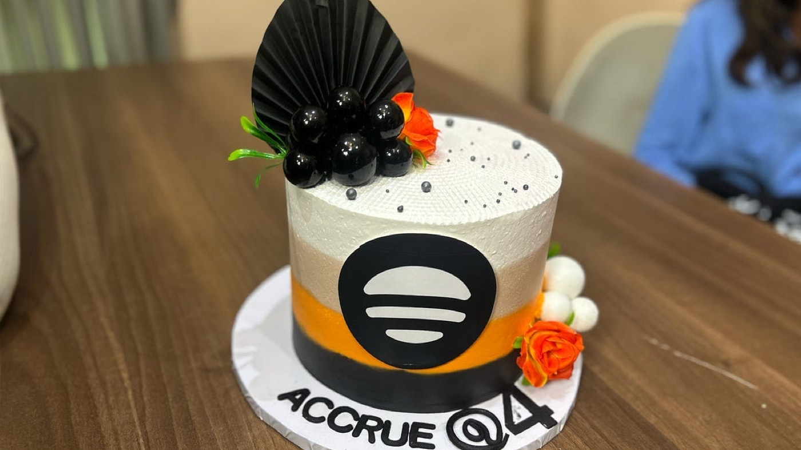
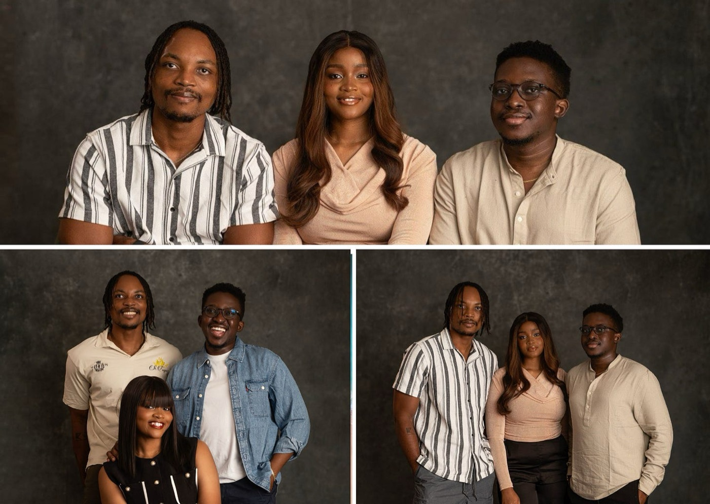
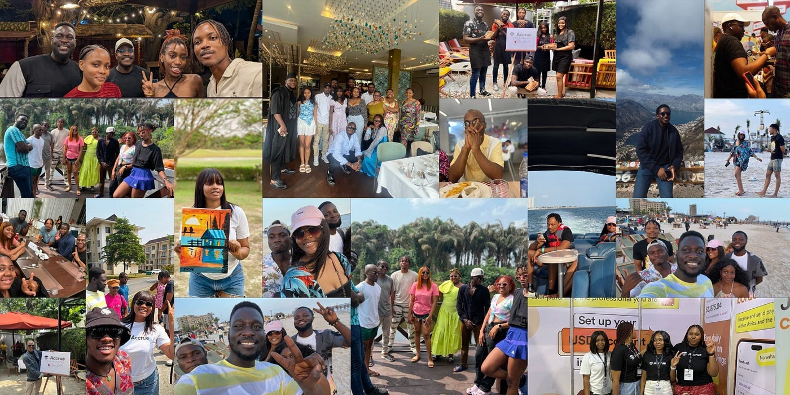

Happy 4th Birthday!
I have so many emotions about Accrue turning 4 today, but the biggest one right now is gratitude. So I decided to write down a few things I’m grateful for.

I’m grateful for my co-founders.
I’m grateful to be building Accrue with Zino and Clinton. They’re both incredibly brilliant people. But more than their brilliance and skill, I’m grateful that I get to work with people I genuinely like.
I like that Clinton is kind, especially when we’re arguing about work. I remember after one particularly heated conversation about Accrue, he sent me a message. I can’t remember his exact words, but this is what stayed with me: that we’re not upset with each other, we’re just both trying to do what’s best for Accrue. That we’re on the same team, and we shouldn’t take the arguments personally. That meant a lot to me.
I like that Zino is a safe place for my anxious thoughts about work. Early on, when Accrue felt overwhelming, and I didn’t even want to think about it, I’d run to Zino’s house. We’d eat, gist, laugh about random things, and sometimes watch a movie. Those moments helped more than he probably knows.
My favourite people, for real.

I’m grateful for tough times that made us better
My favourite article to read at the start of every year is May Your Road Be Rough by Tai Solarin. It teaches that life’s struggles are not obstacles to success; they are part of success.
When we first started Accrue, I was delusionally optimistic. I was ready to… what’s that thing tech people like to say… revolutionize.
I’m still quite delusional, but the many problems we’ve faced have made me more grounded.
I often tell people that when we first started Accrue, I had many sleepless nights. And it wasn’t always because I was working. Most times, it was because I was anxious.
Anxious that we had tried everything and still couldn’t complete our pre-seed round. Anxious that we were down to a few months of runway and might die soon. Anxious that we had to go without salaries for a while, and eventually cut salaries by 35%. Anxious that we would never get a fair chance before failing. Anxious that we wouldn’t get our visas after getting into an accelerator, even though we had tried everything.
Those problems toughened me.
I hardly have sleepless nights about work anymore. And we still have many challenges, even bigger ones now. Someone once joked, “the bigger the head, the bigger the headache.” It’s true.
I’ve somehow built a tougher spine. So like clockwork, I go to bed at 10:30pm and wake up at 5:30am on most days to keep rolling my dice and hoping God blesses me with double six.
Clinton once jokingly called Accrue a cockroach, because there were so many things that could have killed the company, especially in the early days, but we just wouldn’t die.
I’m grateful for that resilience.
I’m grateful for Timi & Aleph
Timi and Aleph were our former employers at Helicarrier. That’s where I met Clinton and Zino.
They have been incredibly kind to us.
When Zino first came up with the idea for Accrue as a DCA app, Aleph gave us our first cheque to build an MVP. There is something deeply kind about someone truly believing in you.
Beyond the money, they’ve been consistently present. When they think we need a push because we should be doing better, and they often do, they never hesitate to send a Telegram message or a thoughtful document explaining why we should sit up.
I appreciate that more than I can explain.
I once saw a tweet that said having good bosses is like having rich parents. It’s true.
There would be no Accrue without them.
I’m grateful for my co-workers
Building a startup is an exercise in uncertainty. So I’m deeply grateful for the people who chose to wade through these choppy waters with us.
I’m especially grateful for our earliest team members. The ones who joined when we couldn’t pay what they deserved, and who stayed even when we had to make the painful decision to cut salaries.
One person even suggested that we could cut his salary by more than we proposed, so the company would have a better chance of surviving. That moment has stayed with me.
For a long time, we were just about five people doing everything, shipping, fixing, worrying, and hoping. Today, we are over thirty people doing remarkable work every day.
I feel incredibly grateful to work with people who are kind, resilient, and deeply committed to what we’re building. People who don’t just work here, but believe in Accrue.
Thank you for choosing us, again and again.

As we look ahead to our fifth year, we’re focused on expanding the ways Accrue helps people and businesses thrive, making cross-border money truly seamless, and removing as much friction as possible from how money moves across African countries.
Exciting times ahead!